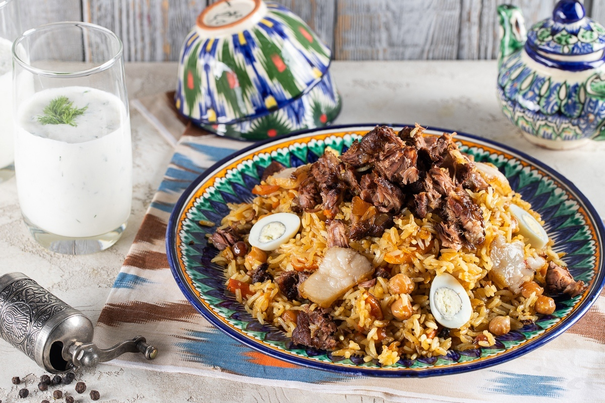
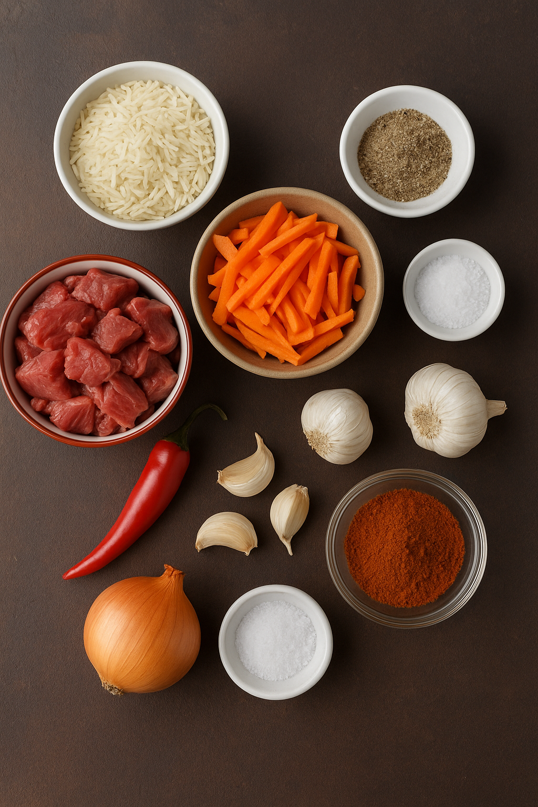

Bosh Sahifa
Osh Pishirish
Osh – o‘zbek xalqining eng mashhur milliy taomidir. Uni to‘y, bayram, mehmondorchilik va har kuni ham tayyorlashadi. Osh mehmondo‘stligimiz ramzidir. Har bir viloyatda oshning o‘ziga xos tayyorlash uslubi bor: ba’zilariga ko‘proq sabzi solishadi, ba’zilarida guruch rang-barang bo‘ladi. Osh ko‘pincha katta qozonda tayyorlanadi va do‘stlar, qo‘ni-qo‘shnilar bilan birga yeyiladi.

🥘 Osh (Palov) Retsepti
Kerakli Mahsulotlar:
- 500 g go‘sht (mol yoki qo‘y go‘shti)
- 500 g guruch
- 150 g sabzi
- 2 ta piyoz
- 150 ml o‘simlik yog‘i
- 1 bosh sarimsoq
- Tuz, murch (ta’bga ko‘ra)
- Zira (ixtiyoriy, lekin ta’m beradi)
- Suv

Tayyorlash Bosqichlari:
- Mahsulotlarni tayyorlash:
- Go‘shtni kichik-kichik bo‘laklarga to‘g‘rang.
- Sabzini uzun-uzun qilib kesing.
- Piyozni yarimhalqa shaklida to‘g‘rang.
- Go‘sht va piyozni qovurish:
- Qozonga yog‘ni qizdiring.
- Avval piyozni oltin rang bo‘lguncha qovuring.
- Keyin go‘shtni solib, qovurishda davom eting.
- Sabzini qo‘shish:
- Sabzini qo‘shib, 5-7 daqiqa qovuring.
- Tuz, murch, zira soling.
- Suv qo‘shish va dimlash:
- Qozonga suv quyib, go‘sht yumshaguncha past olovda dimlang.
- Guruchni solish:
- Guruchni yuving va qozonga tekis qilib seping.
- Suvni guruch ustidan 1–1,5 sm balandlikda quyib chiqing.
- Qaynatib, suv tortilguncha pishiring.
- Sarimsoqni qo‘yish:
- Sarimsoq boshini butuncha qo‘yib, qozon qopqog‘ini yoping.
- Past olovda 15–20 daqiqa dimlab qo‘ying.
- Aralashtirish va tortish:
- Osh tayyor bo‘lgach, ehtiyotlik bilan aralashtiring.
- Issiq holda dasturxonga torting.
Bosh Sahifa